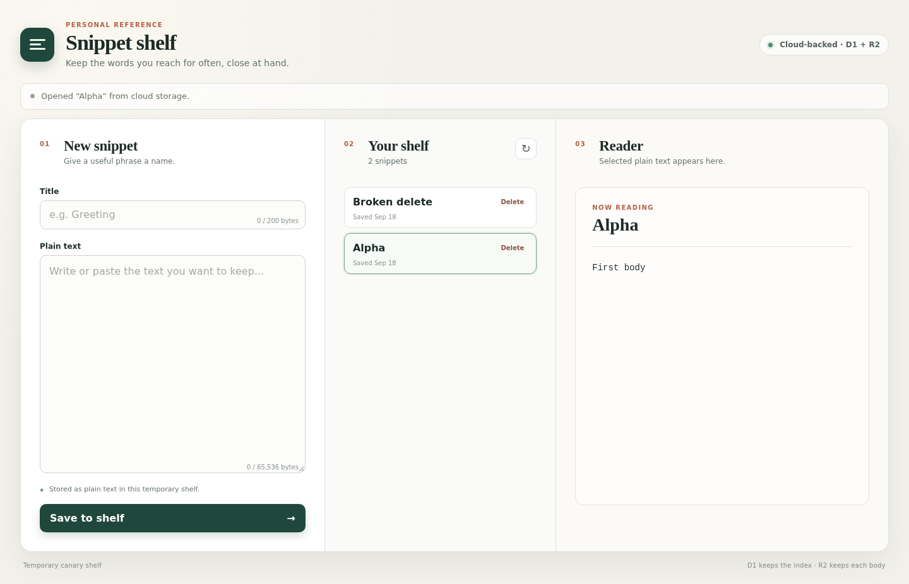

1. The real deployed shelf starts with healthy Alpha and the explicitly synthetic Broken delete failure fixture.

Original capture details
The real deployed shelf starts with healthy Alpha and the explicitly synthetic Broken delete failure fixture. Captured from https://deos-tmp-29e1a604cd5e918d7382569b.skundu.workers.dev/; Chromium inside the implementation sandboxSHA-256: 5f9926a2eacdbfbfdf854ec1c9ce3949b011a6c501b2b30fac94cc34fb3ed1d4